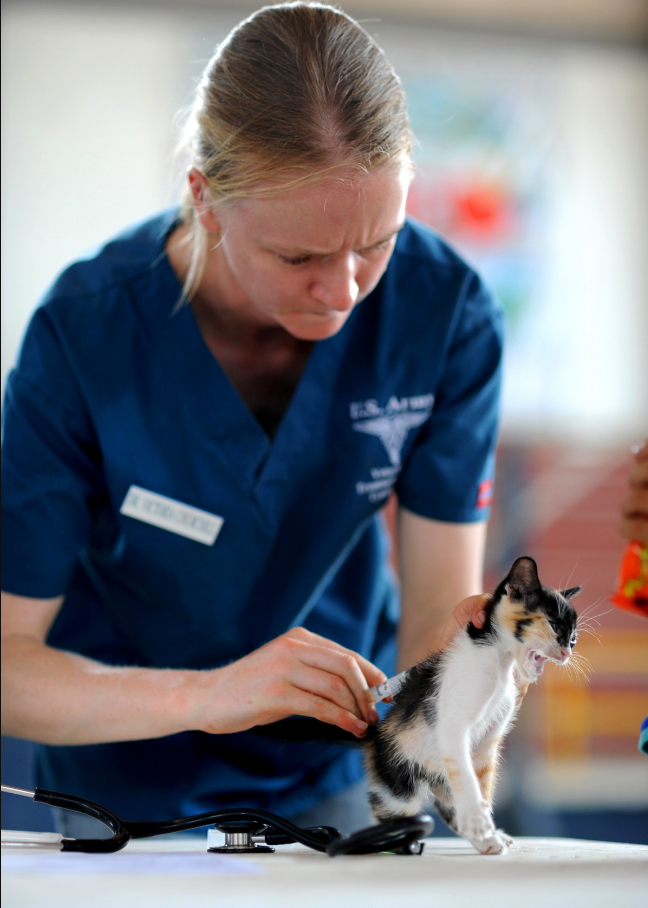
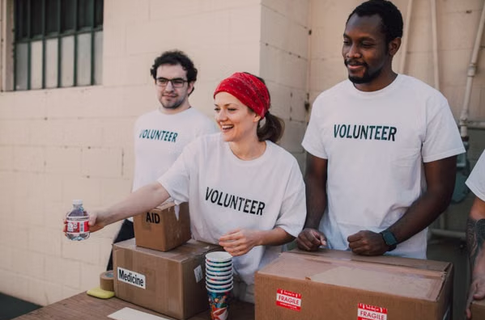

Cuidados & Acolhimento
Ajude no manejo diário, alimentação e carinho dos gatinhos resgatados no abrigo.
Contra a superstição, a favor do amor!
Ajude no manejo diário, alimentação e carinho dos gatinhos resgatados no abrigo.

Abra as portas da sua casa para abrigar um gatinho temporariamente até a sua adoção final.

Participe da organização e auxílio em nossas feiras de adoção e campanhas educativas.
Mantemos o abrigo e os atendimentos veterinários exclusivamente por meio de doações da comunidade. Veja como você pode apoiar nossas ações: